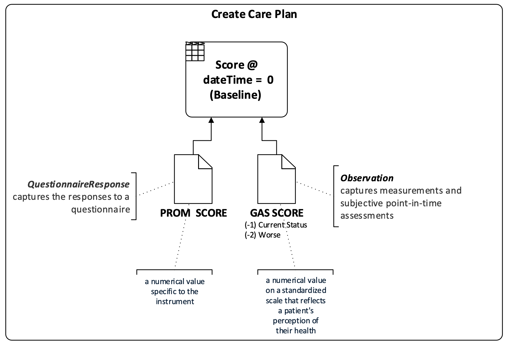

Person-Centered Outcomes
0.2.0 - ci-build

Person-Centered Outcomes
0.2.0 - ci-build

Person-Centered Outcomes - Local Development build (v0.2.0) built by the FHIR (HL7® FHIR® Standard) Build Tools. See the Directory of published versions
| Official URL: http://hl7.org/fhir/us/pco/ImplementationGuide/hl7.fhir.us.pco | Version: 0.2.0 | |||
| Draft as of 2025-02-10 | Computable Name: PCO | |||
Person-Centered Outcomes (PCO) FHIR IG content has been permanently relocated to a site managed by HL7. Please use this URL for all content and future updates:
The Person-Centered Outcomes (PCO) HL7® FHIR® Implementation Guide (IG) supports the exchange of information related to a person's goal-directed care guided by a person-centered outcomes approach, which includes the identification and tracking of health outcome goals that matter most to patients using either Goal Attainment Scaling (GAS) or patient-reported outcome measures (PROM).
The PCO IG includes profiles for interoperable GAS Goals, support for GAS Goal editing tools, and PCO measures. GAS in healthcare, measures the extent to which individuals achieve specific goals or objectives. It allows for the quantification and evaluation of progress toward individualized goals, particularly in areas where traditional outcome measures may be insufficient. GAS involves collaboratively setting goals with the individual and assigning numerical scales to each goal to represent different levels of achievement. This approach provides a more nuanced and tailored way to assess progress and outcomes, taking into account the unique circumstances and aspirations of the individual.
Everyone deserves fair and just access to high-quality health care that addresses their unique needs, reflects their diverse background and culture, and is designed to deliver the outcomes they want. This is particularly true for people with complex health care needs, many of whom are older adults who often receive care that may be misaligned with their needs and goals. Nearly 30% of Medicare beneficiaries have complex health care needs, and more than 14 million people in the U.S. need long-term services and supports. These numbers are growing every year.
Goal-directed care in healthcare centers on setting and achieving specific, personalized goals that prioritize an individual's well-being and "What Matters Most" to each person. Rather than just treating symptoms, this approach involves close collaboration between patients, caregivers, and healthcare providers to identify individual goals related to health outcomes, functional improvement, or symptom management. Once goals are established, tailored care plans are developed, incorporating various treatments, therapies, and lifestyle adjustments to meet the individual's needs and preferences. Continual monitoring and adjustment ensure alignment with evolving priorities, fostering patient engagement and satisfaction while enhancing overall healthcare effectiveness.
The Person-Centered Outcomes (PCO) approach focuses on setting and achieving specific, personalized, measurable goals that prioritize an individual's well-being and "What Matters Most" to each person. Rather than just treating symptoms, this approach involves close collaboration between patients, caregivers, and healthcare providers to identify individual goals related to health outcomes, functional improvement, or symptom management. After goals are established, tailored care plans are developed, incorporating various treatments, therapies, and lifestyle adjustments to meet the individual's needs and preferences. Continual monitoring and adjustment ensure alignment with evolving priorities, fostering patient engagement and satisfaction while enhancing overall healthcare effectiveness. Clinicians throughout the care continuum—from primary care to specialty care, to home and community-based services—can use this approach to identify what is important to a person (e.g., feeling well enough to visit grandchildren). This approach and its coordinating measures can help support and assess the quality of goal-directed care being implemented.
The need for the PCO IG was identified as a natural next step from the scope of the MCC eCare Plan FHIR IG STU1 which provided high-level guidance for Goals and measuring outcomes. As goal-directed care is growing in use and being incorporated into payment programs, the need for data standards around implementation and reporting are necessary. This IG supports implementers, researchers, and evaluators of goal-directed care planning to improve health outcomes.
 |
|
|  | |
The PCO IG is complementary and may be used in combination with other HL7 FHIR Implementation Guides (IGs) that support other aspects of person-centered, goal-directed care planning. See Related FHIR IGs for a brief summary about how this PCO IG is related to the scope and usage of other HL7 FHIR IGs.
This IG is divided into several sections that are listed at the top of each page in the menu bar.
IG © 2024+ HL7 International / Patient Care. Package hl7.fhir.us.pco#0.2.0 based on FHIR 4.0.1. Generated 2025-02-10
Links: Table of Contents |
QA Report
| Version History |
 |
Propose a change
|
Propose a change